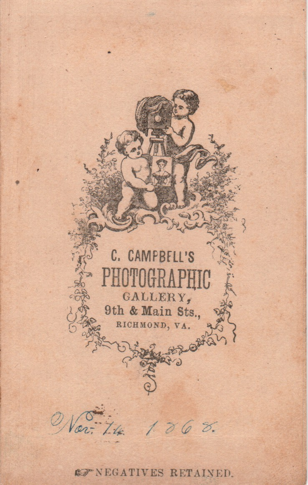
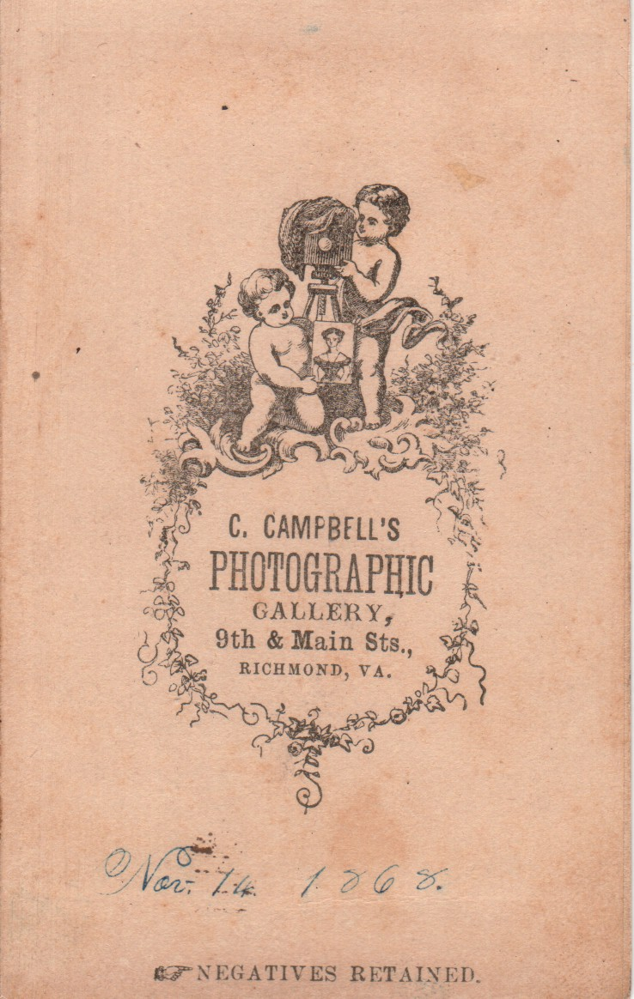
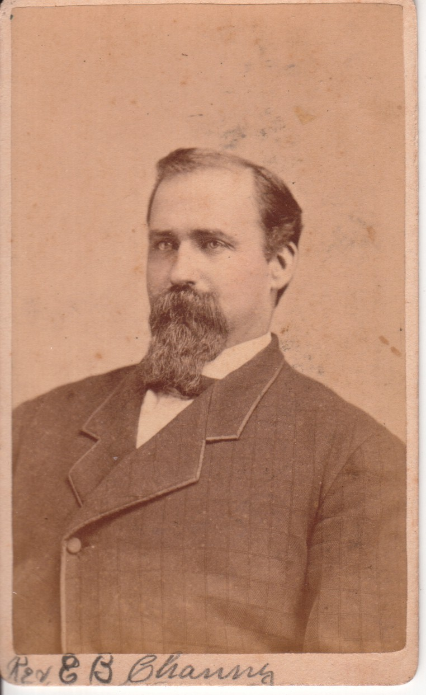

The following photographs might be of Archibald Pae (1810-1878), despite an annotation on one to the contrary. These three photographs have been grouped together because they all appear to be of the same gentleman.
1. A man in a suit (taken from the Rudge Family Photo Album). I considered the possibility it might be a railway uniform, but have been told by an expert it is probably not. The man looks very similar to a man in a photo appearing in the Coble album taken in Richmond, VA that has the date "Nov. 14 1868", which is similar to the date Archibald Pae died (18 Nov 1878). Archibald Pae was a foreman and a master mechanic for a couple of different railway companies.
2. A man in a photo appearing in the Coble Family Photo Album taken in Richmond, VA that has the date "Nov. 14 1868", which is approximately the same date as Archibald Pae died (18 Nov 1868). (Note that John William Rudge never lived in Richmond, although he did have in-laws that lived there).
 

3. This is a picture of a man. A name written on the front states "Rev. E.B. Channy". According to the back, it was taken in Danville, VA. This might also be a photo of one of Archibald's sons. (Here is a photo of his son James A. Pae.)

Last updated on 10 Aug 2010.